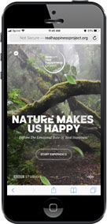
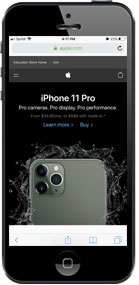

PARC: Alignment
BBC Earth
realhappinessproject.org
BBC exemplifies alignment in this website. They use a strong center alignment with their typography. The converging trees in the background image also draws your eye to the center, which directs your eye through the webpage and to the button to start your experience.
Rule of Thirds
Apple
apple.com
Apple did a great job on their mobile site. This image is an example of how they use good design. One way they accomplish that is through the Rule of Thirds. The typography runs along one third of the screen, while the new triple camera is on the lower third line. This shows you where the most important parts of the webpage are.
White Space & Clean Design
Le Bonnet
lebonnet.nlLe Bonnet is a great example of clean design and the use of white space. The background of the webpage in addition to the white background in their images makes everything look clean and open. Their elements on their page have a lot of space around them giving your eyes room to navigate around them without getting lost in void. There is a good balance between elements.